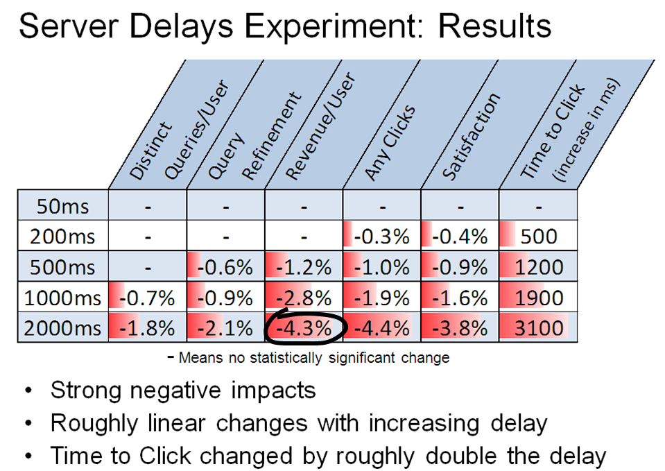
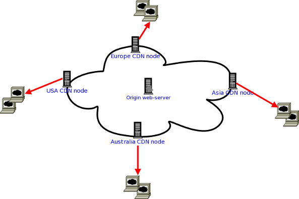
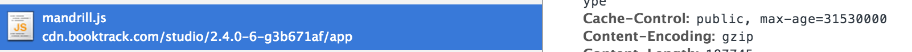
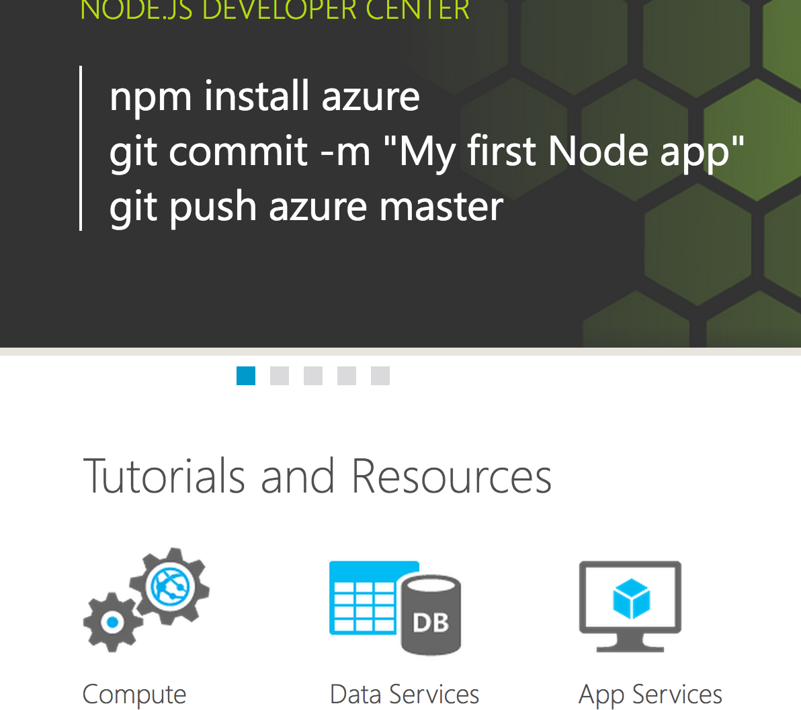
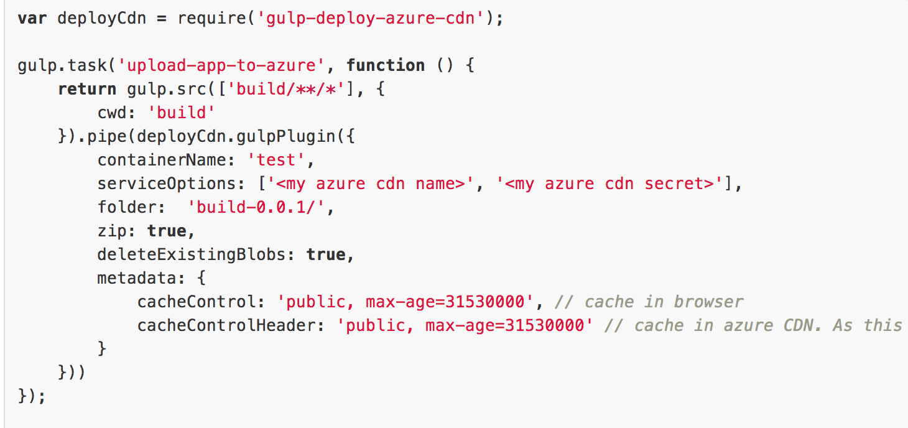
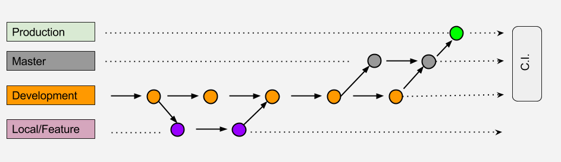
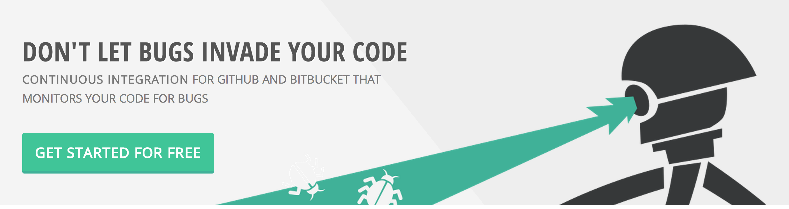

Continuous deployment of a Single Page Application on Azure
Part of dev team @ Booktrack
-
Konstantin Raev
-
Richard Sentino
visit www.booktrack.com
Our front end stack
Defeating complexity with abstractions
- Node.js
- Angular.js
- Typescript
- Require.js
- Stylus & SASS
- Bower
- Gulp & Grunt
Bing experiment
Performance matters
https://www.youtube.com/watch?v=7ubJzEi3HuAUse Content Delivery Network to serve files from closest location
- Reduce download size of scripts, styles and images
- Bundle multiple files into one

- Prioritize the content download
- 
Not as hard as before
Using JavaScript and Node.js as CLI tool
Problem?
Order of tasks execution

Deployment steps
- Compile and minify stuff with Gulp
- Put it in the Internet
- ???
- PROFIT
Microsoft Azure

Microsoft Azure has Node.js SDK
Checkout github.com/bestander/deploy-azure-cdn
Final point
- Organize your project with your favorite preprocessors
- Use Node.js CLI to build deployment artifacts
- Use Node.js to deploy to CDN
Continuous Delivery Pipeline
Team - Version Control - Build - Test - Deployment
Team
User Experience
User Interface
Testers (external)
Dev team (CTO / front-end / back-end / native mobile)
Development Setup


Development Workflow
Continuous Integration
on local machine

really ?

http://gulpjs.com/
Run builds
on local machine
Compile TypeScript
Compile Stylus
Run tests
Best way to check changes ?
Best way to check changes ?
F5, ctrl + r, ⌘ + r
Working on multiple platforms and browsers

Chrome, Opera, Firefox
There must be a better way
LiveReload (tiny-lr)
- It will refresh the browser for you
- Apply CSS without reloading the page
- Suitable for build tools integration
LiveReload (tiny-lr)
index.html
...
<body>
<script src="http://localhost:35729/livereload.js"></script>
</body>
</html>
gulp.js
1. var tinylr = require('tiny-lr');
2. gulp.task('dev', function(){
3. var lr = tinylr();
4. lr.listen(35729);
5. gulp.watch('/path/to/**/*.js', function(event){
6. lr.changed({
7. body: { files: [event.path] }
8. });
9. });
10.});LiveReload Demo
Testing

Manual Test
- Developers
- External
- Smoke, Functional testing, etc
Automated Test
- Karma test runner from AngularJS project
- - execute test via PhantomJS (headless webkit browser)
- Only the important features
Sample Test
CSV Import
1. it("should validate empty first name from CSV file", () => {
2. var result:string[] = [];
3. var csvData: string = "first name, last name, password \n" +
4. ",Smith,somepassword";
5.
6. result = this.csvService.parse(csvData);
7.
8. expect(result.errors[0]).toEqual("There is some data missing in your
file for row(s) [1]. Update the file and upload again.");
9. expect(result.students.length).toEqual(0);
10.});API end point validation
1. it('should validate end point when get("languages") is called',() => {
service.get('languages');
2. $httpBackend.expectGET('/text/languages');
3. });Continuous Integration
Goodbye Drone.io
PROS:
Very easy to setup
CONS:
Not configurable enough
- Hosted continuous integration and deployment software as a service
- Maintenance-free
- Free and paid version
- 5-10 minutes investment of your time
- Large collection of integrated services eg. Github, AWS, Digital Ocean, Chef, Puppet, Capistrano, Heroku, Java, PHP, Rails, Node,js, MySql, PostgreSQL
- Has more flexibility compared to Drone.io
Codeship Demo
Monitoring
We use
- Azure monitoring
- Google Analytics
- Optimizely (AB testing)
Monitoring
Suggestions?
- Segment.io
- Amplitude
- MixPanel
Final Points
- Automation saves time and money
- Reduce integration problems
- Use liveReload to automate browser refresh
- GulpJS for local and remote build
- Try Codeship
OpenSource
- Reveal.js
- Grab the example from Github
- https://github.com/booktrack/continuous-delivery-talk
- goo.gl/rBKesI - short link for the presentation